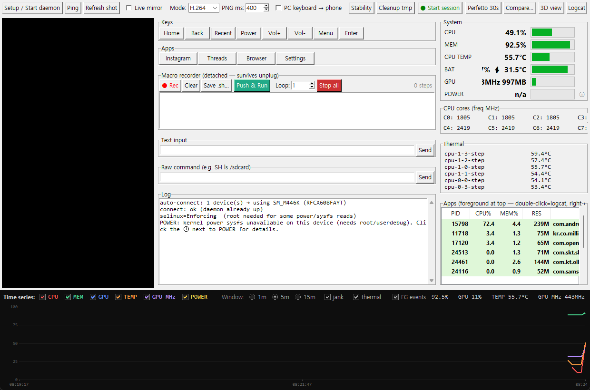
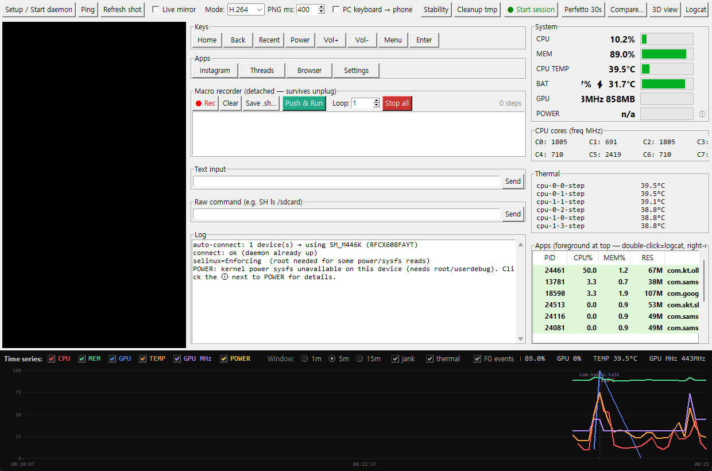
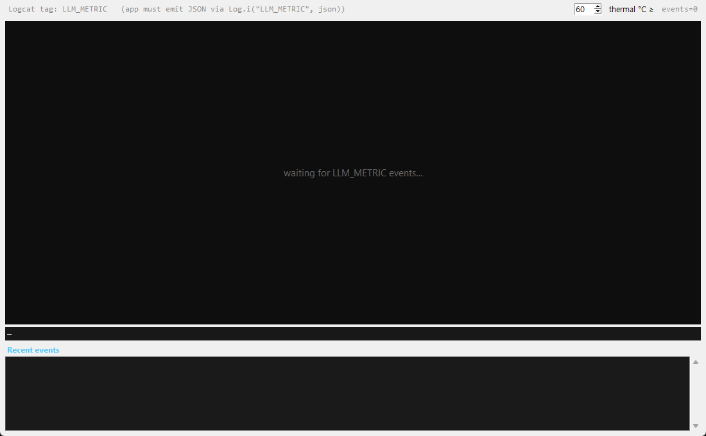
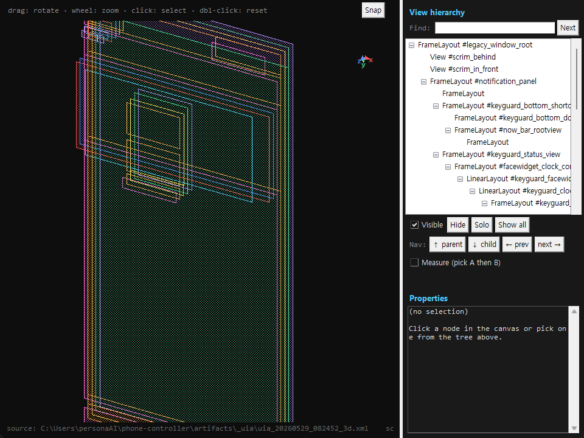
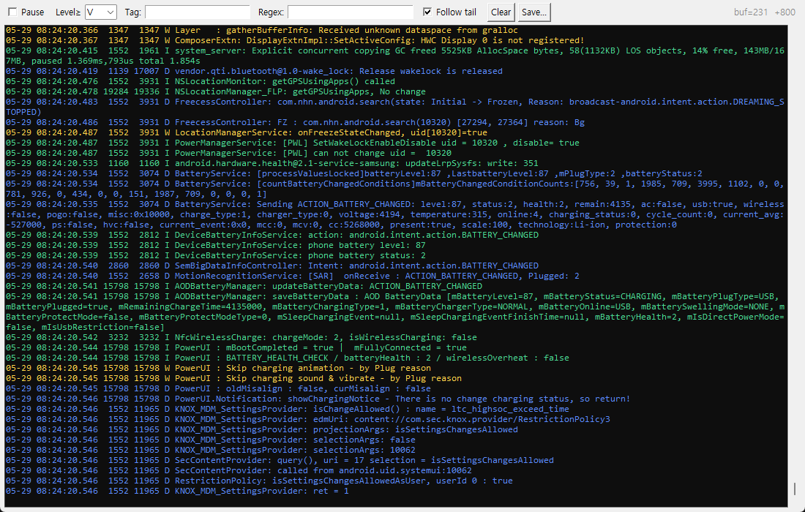
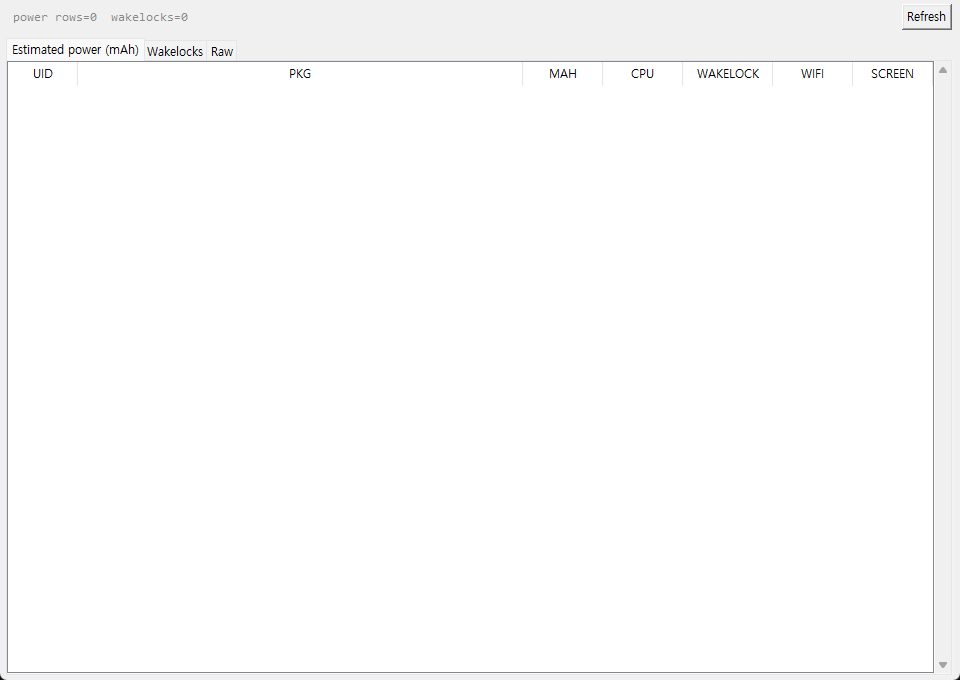
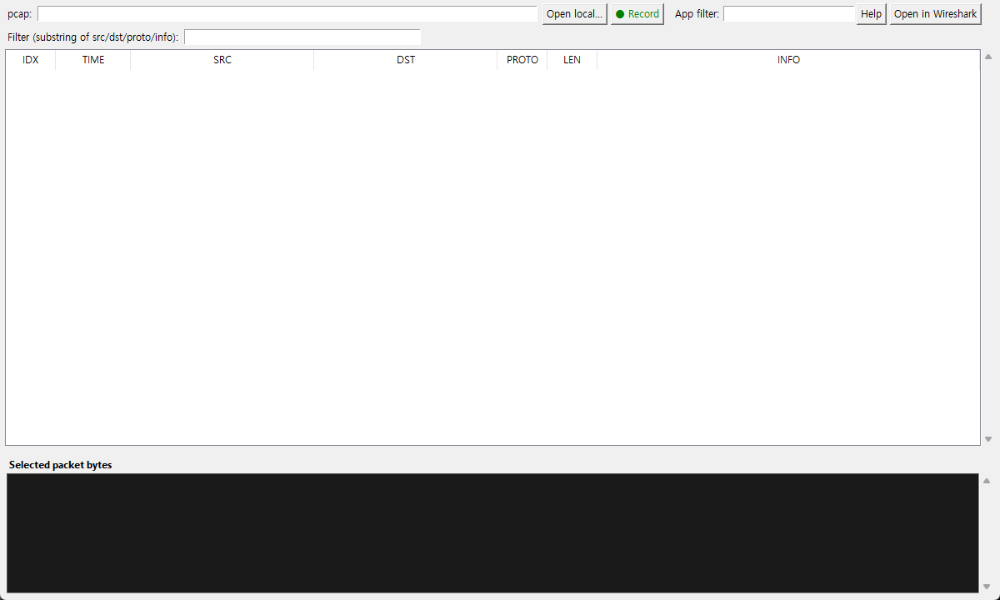
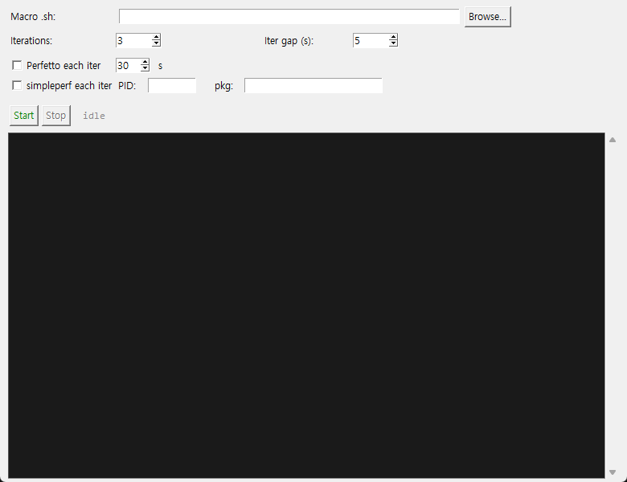
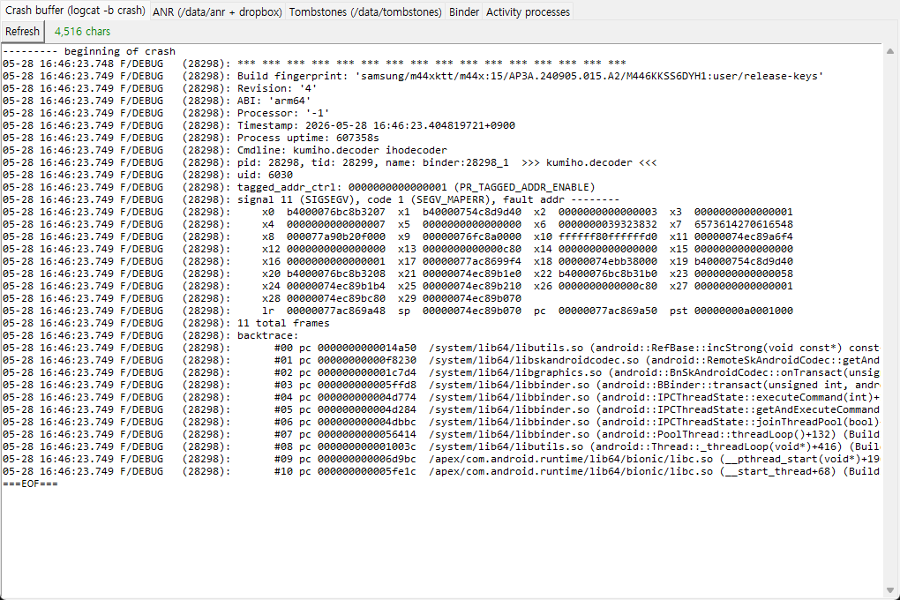

Phone Controller — 사용자 매뉴얼
대상 디바이스 예시: Samsung SM-M446K (Android 15) · 모든 기능은 ADB shell 권한 기준으로 동작 가능
1. 설치 / 첫 실행
1.1 설치
dist/PhoneController-1.0.0-win64.msi 더블클릭 → 사용자 단위 설치 (관리자 권한 불필요)- 시작 메뉴에 Phone Controller 바로가기 자동 생성
- Python / adb 사전 설치 불필요 — 모두 번들됨
1.2 폰 쪽 준비
- 설정 → 개발자 옵션 → USB 디버깅 ON
- 처음 USB 연결 시 폰에 "이 컴퓨터를 신뢰" 다이얼로그가 뜨면 허용
- (선택) 한글 입력이 필요하면 GUI 첫 실행 후
Setup / Start daemon 버튼이 ADBKeyboard.apk를 자동 설치
1.3 처음 띄울 때
- 시작 메뉴 또는
python gui.py로 실행
- USB 연결된 디바이스가 자동 enum — 우상단 콤보박스에
model (serial) 형태로 표시
- 좌상단 상태 등이 ● connected이 되면 끝
- 안 되면
↻ (refresh)로 재시도, 그래도 안 되면 Setup / Start daemon 클릭
중요: 디바이스 모델/시리얼이 보이지 않으면 ① USB 케이블 문제 ② adb 권한 미허용 ③ 다른 adb 인스턴스 충돌입니다. 작업 관리자에서 adb.exe 모두 종료 후 다시 띄우면 대부분 해결됩니다.
2. 메인 화면 한눈에 보기

메인 화면 — 좌측 미러 / 가운데 컨트롤 + 로그 / 우측 시스템 메트릭 + Apps + 하단 시계열 차트
2.1 영역 구성
- 상단 툴바 — 디바이스 picker, 핵심 기능 진입 버튼들
- 좌측 컬럼 — 스크린샷/미러링 캔버스, HW 키 + 앱 런처 + 키보드
- 가운데 컬럼 — raw 명령창, 매크로 패널, 로그
- 우측 컬럼 — System (CPU/MEM/Temp/BAT/GPU/POWER), CPU cores per-freq, Thermal zones, Apps (PID/CPU%/MEM%/RES/Package)
- 하단 — 시계열 차트 (6개 시리즈 토글, 1/5/15분 윈도우)
2.2 상단 툴바 버튼 요약
| 버튼 | 역할 |
|---|
Setup / Start daemon | handler.sh + daemon.sh 푸시 + nc -L 띄움. 첫 연결 시 자동 호출됨 |
Ping | daemon TCP ping |
Refresh shot / Live mirror | 한 장 / 연속 미러링 (PNG ↔ H.264) |
PC keyboard → phone | PC 키보드 입력을 폰에 전달 (한글은 ADBKeyboard 사용) |
Stability | crash / ANR / tombstone / binder 5-탭 분석 |
● Start session | artifacts 폴더 시작 — 모든 분석 데이터 jsonl로 적재 |
Perfetto 30s | 시스템 트레이스 캡처 |
Compare… | 두 세션의 통계/차트 비교 |
3D view | 현재 화면의 view tree 3D 시각화 |
Logcat · Battery · LLM live · Scenario… · Flame… · Wire… | 각 분석 별창 (아래 섹션 참조) |
3. 시스템 모니터링 + 통합 타임라인
3.1 우측 System 패널
- CPU / MEM / TEMP / BAT / GPU / POWER — 1.5초 폴링, 값 + 프로그레스바
- CPU cores — 8코어 freq(MHz)
- Thermal — 가장 뜨거운 zone 6개 (이름 + °C)
- POWER 우측의 ⓘ — 왜 가끔 "n/a"가 뜨는지 설명 (커널 sysfs가 root-only)
3.2 하단 시계열 차트
- 토글 가능한 6시리즈:
CPU
MEM
GPU
TEMP
GPU MHz
POWER
- 윈도우 토글:
1m · 5m · 15m
- 이벤트 토글:
jank (janky frame 발생 시 빨간 tick), thermal (65°C 진입~62°C 이탈 빨간 띠), FG events (foreground 앱 전환)
- 차트 hover → 그 시점 모든 시리즈 값 스냅샷
4. 프로세스 / Apps 패널
- foreground 앱이 항상 맨 위 (녹색 행)
- 2.5초마다 갱신, USER가
u0_aXXX인 사용자 앱만 표시
- 더블클릭 → 해당 PID의 logcat 라이브가 자동 열림 (
--pid= 필터)

Apps 우클릭 — PID별 분석 진입 메뉴
4.1 우클릭 메뉴
| 항목 | 내용 |
|---|
| logcat (pid) | 그 PID 한정 logcat |
| threads (per-TID CPU/wait) | 스레드 리스트 — 행 더블클릭 시 detail (§10) |
| jank timeline | gfxinfo framestats 기반 (§9) |
| memory detail | PSS/RSS/Heap/Graphics + smaps_rollup |
| I/O + scheduling | /proc/io rchar/wchar + cpuset + governor |
| Network I/O (rx/tx) | per-UID 트래픽 시계열 (§13) |
| simpleperf 30s record + report | debuggable 앱 한정 native sampling |
| appops get / dumpsys meminfo · gfxinfo · activity · package | 각각의 dumpsys 결과를 별창에 |
| Trigger ANR / Force-stop | kill -3 / am force-stop |
5. 화면 미러링과 입력 제어
5.1 미러링 모드
- PNG 모드 —
screencap -p 폴링, 150~3000ms 간격 조정
- H.264 모드 —
screenrecord stdout → PyAV 디코드 (~60fps, FFmpeg 번들)
- 좌측 캔버스 클릭 = tap, 드래그 = swipe
5.2 키 / 앱 / 키보드
- HW 버튼들: Home/Back/Power/Vol±/Menu/Enter
- 앱 런처: Instagram / Browser / Settings / 등
- PC 키보드 → 폰: 한글 자동 ADBKeyboard 우회
- raw shell 명령창 (자유 입력)
6. 매크로 녹화/실행
Record 누르고 캔버스를 조작 / 키를 입력 → TAP / SWIPE / KEY / TEXT 시퀀스가 상대 timestamp와 함께 녹화됨Stop → JSON 텍스트로 저장 가능Play loop N회 또는 ∞Push & Run (detached) — 폰에 .sh로 푸시, setsid로 백그라운드 실행 → USB를 뽑아도 계속 동작- 매크로별 pidfile +
Stop all 버튼으로 안전 종료
7. 세션 / Artifacts 수집
툴바 ● Start session → artifacts/<YYYYMMDD_HHMMSS>/ 폴더 자동 생성. 세션 종료 시 report.md 자동 작성.
| 파일 | 내용 |
|---|
device_info.json | 제조사/모델/SoC/Android/RAM/refresh_hz/kernel |
realtime_metrics.jsonl | 1.5s마다 CPU/MEM/GPU/Temp/Freq/Power/thermal zones |
process_metrics.jsonl | 2.5s마다 foreground 앱 + 앱별 CPU/MEM |
llm_runtime_metrics.jsonl | 앱이 Log.i("LLM_METRIC", json) 부른 라인 |
logcat.txt | 세션 전체 logcat |
perfetto_trace.pb | Perfetto 30s 캡처 시 |
simpleperf_report_<pid>.txt | 우클릭 simpleperf 시 |
uia/uia_<ts>_*.xml | jank 발생 시 자동 또는 3D view용 uiautomator dump |
report.md | 세션 종료 시 자동 — Device/Performance/Findings/Recommendations |
자동 회귀 감지: 세션 시작 후 첫 30초를 baseline으로 잡고, 이후 메트릭이 ±3σ를 벗어나면 로그 패널에 ⚠ 알림 (메트릭당 60초 throttle). 대상은 CPU / MEM / GPU / Temp / Power.
8. LLM live 차트

LLM live — TTFT/tps/decode_ms 3-band 차트 + backend 변화 마커 + thermal-aware tps
8.1 통합 흐름
앱에서 한 줄만 찍으면 자동 수집:
Log.i("LLM_METRIC", JSONObject().apply {
put("event", "done")
put("model_name", "gemma-2b-it")
put("backend_requested", "gpu")
put("backend_actual", "gpu+cpu_fallback")
put("ttft_ms", 612)
put("tokens_per_sec", 34.8)
}.toString())
8.2 차트 구성
- 3밴드 시계열: TTFT(ms 0–3000) / tokens/sec(0–60) / decode_ms(0–200)
- Backend 변화 마커 —
backend_actual이 gpu → cpu_fallback 등으로 바뀐 지점에 보라색 dashed line
- thermal-aware tps — Spinbox로 임계 °C 설정. 그 이상 시점의 tps와 그 미만 시점의 tps를 별도로 평균 → throttling penalty 정량화
- 하단 텍스트 로그에 매 event 한 줄씩 시간순
9. Jank timeline · All Frames · 3D view
9.1 Jank timeline (Apps 우클릭 → jank timeline)
- 2-lane 시간축: UI 스레드 / RenderThread 시간정렬
- 색상:
on-time
slow (1–2× deadline)
janky (≥2×)
frozen (≥700ms)
- vsync deadline 자동 —
dumpsys display로 60/90/120Hz 감지해 동적 조정
- hover → frame# · 총 ms · lane 표시
- frame 클릭 → 우측에 8단계(input·animation·traversal·draw·sync wait·issue cmds·gpu work·gpu swap) 분해 + dominant stage
- 도넛: 화면 frame의 누적 stage 비율
9.2 All Frames (jank timeline 안 "All Frames" 버튼)
- 표 형태로 모든 frame:
# · t(s) · Total ms · UI ms · RT ms · Status · Dominant stage
- Status 색상은 위와 동일
- "Follow newest" 체크 시 자동 스크롤
9.3 Auto UIA on jank (jank timeline 안 체크박스)
janky frame(≥2× deadline) 감지 시 자동으로 uiautomator dump 실행 (30s throttle). 결과는 session_dir/uia/uia_<ts>_fc<n>_<dur>ms.xml에 저장. 활성 패키지/노드 수가 라벨로 표시.
9.4 3D view tree (메인 toolbar "3D view")

3D view tree — Layout Inspector 스타일 (좌: 회전 가능한 캔버스, 우: 트리/속성 패널)
버튼 클릭 → uiautomator dump 캡처 → view hierarchy를 depth 축으로 ortho 투영해 회전 가능한 3D로 그림.
- 좌측 캔버스: 드래그=회전, 휠=zoom, 클릭=노드 선택, 더블클릭=카메라 리셋 + autofit
- 우측 상단: 노드 트리 (양방향 동기화)
- 우측 중간:
Visible 체크박스 + Hide / Solo(선택+조상+자손만) / Show all + Nav 버튼 (↑parent · ↓child · ←prev · next→) + Measure 모드 (두 노드 거리/overlap)
- 우측 하단: Properties — class / resource-id / package / text / bounds 등 전부
- 상단 우측
Snap — 현재 폰 화면 PNG 썸네일을 별창에
- 검색: class / resource-id / text / content-desc 부분일치,
Next로 순회
10. 스레드 detail
Apps 우클릭 → threads 윈도우 → 행 더블클릭.
- 1Hz 폴링으로 ~5분 윈도우
- 차트: CPU% + runqueue WAIT% 라인
- State 색띠 스트립 (R run / S sleep / D disk-wait / Z zombie / T stop / I idle)
- 마지막 stat / wchan / voluntary·nonvoluntary context switches
- kernel stack:
/proc/<pid>/task/<tid>/stack — 보통 root 필요. 못 읽으면 "needs root" 표시
- 전체 vertical scroll + Copy all / Copy stack 버튼 + stack 우클릭 컨텍스트 메뉴
11. Logcat 라이브

Logcat live — level/tag/regex 필터, follow tail, 레벨별 색상
- 메인 toolbar
Logcat → 전체. Apps 더블클릭 또는 우클릭 → 그 PID 한정 (--pid=)
- 필터: Level≥ (V/D/I/W/E/F), Tag 부분일치, Regex (ignore case)
- 색상: D / I / W / E
Follow tail: 새 라인 들어오면 자동 스크롤Clear · Save… 가능
12. Battery 분석

Battery — dumpsys batterystats --checkin 파싱 (per-uid mAh + wakelock + raw 탭)
- 3 탭:
- Estimated power (mAh) — uid · package · 총 mAh · CPU / Wakelock / WiFi / Screen 분리
- Wakelocks — name · ms · count · package
- Raw — 원본 dumpsys 출력
Refresh로 재호출
13. Network I/O (per-UID)
Apps 우클릭 → Network I/O (rx/tx).
- PID →
/proc/<pid>/status에서 UID 매핑
- 데이터 소스 자동 선택:
/proc/net/xt_qtaguid/stats가 있으면 1초 폴링 (구버전 Android)- 없으면
dumpsys netstats detail 5초 폴링 (Android 11+)
- transport id를 라벨로 정규화:
wifi · cellular · vpn · usb …
- 윈도우 제목에 source 표시 —
src: dumpsys netstats
한계: 1초 단위 라이브 트래픽은 root 환경의 xt_qtaguid 또는 tcpdump가 필요합니다. dumpsys fallback은 5초마다 누적값이라 짧은 burst는 잘 안 보입니다.
14. Packet capture (Wire / PCAPdroid)

Wire — PCAPdroid 1-클릭 record/stop + 자체 pcap 파서
14.1 처음 한 번만
● Record 첫 클릭 → 폰에 PCAPdroid가 없으면 자동 다이얼로그
- Install via adb (자동, ~10MB) — GitHub releases에서 최신 APK 받아
adb install
- Open Play Store on phone
- Cancel
- 설치 끝나면
● Record 다시 클릭 → 폰에서 VPN 권한 동의 (한 번만)
14.2 평상시 사용
● Record 클릭 → 캡처 시작
- (선택) App filter 입력란에 패키지명을 넣으면 그 앱만
- 폰에서 트래픽 발생시키기 (브라우저 열기, 영상 재생, 채팅 등) — 충분히 (10~30s)
■ Stop & pull 클릭 → 자동:
- stop intent 전송
- PCAPdroid의 flush 완료까지 파일 크기 안정화 대기
artifacts/_pcap/로 자동 pull- 자체 v2 pcap 파서로 패킷 리스트 자동 표시
14.3 파서 표시
- 컬럼:
# · t(s) · src:port · dst:port · proto · len · info
- TCP flags(
SAFRPU) / seq / ack / UDP len / DNS query name
- 패킷 클릭 → 하단 hex+ASCII 바이트뷰
- Filter 입력으로 부분일치 (src/dst/proto/info)
Open in Wireshark — wireshark.exe가 설치돼있으면 외부 실행Open local… — 임의 pcap 파일 열기
TLS: HTTPS payload는 PCAPdroid에서 mitm 또는 SSL key log를 설정하지 않으면 암호화된 채로 보입니다. 평문 HTTP/DNS는 그대로 보임. 적법한 본인 디바이스에서만 캡처하세요.
15. Scenario runner

Scenario runner — 매크로 + Perfetto + simpleperf 묶음 N회 반복
- Macro .sh — Browse로 미리 녹화한 매크로 스크립트 선택
- Iterations — 반복 횟수, Iter gap — 사이 sleep(s)
- Perfetto each iter 체크 → 매 iter 시작 시 30s(조정 가능) Perfetto 캡처
- simpleperf each iter 체크 → PID/pkg 입력하면 매 iter 시 simpleperf record
Start 누르면:
- (필요 시) 세션 자동 시작 →
artifacts/<ts>/
- iter당
iter_NNN/ 서브폴더 생성
- 각 캡처 결과 (perfetto_trace.pb, simpleperf_report_*.txt)를 iter 폴더로 이동
- iter간 sleep 후 다음
Stop 언제든 중단
16. Flame graph 뷰
메인 toolbar Flame… → simpleperf_report_*.txt 파일 선택.
- callgraph 들여쓰기를 파싱해 Canvas flame graph 렌더
- 클릭 = zoom-in (그 박스를 100%로), 우클릭 = zoom-out, ESC = reset
- hover → 함수명 · percent · 자식 수
- 깊이별 색상, 너무 좁은 박스는 자동 생략
17. Stability (crash · ANR · tombstone)

Stability — crash buffer / ANR / tombstone / binder / activity processes 5탭
- Crash buffer —
logcat -b crash 최근 300줄
- ANR —
/data/anr/ + dropbox
- Tombstones —
/data/tombstones/
- Binder dump
- Activity processes
일부 경로(/data/anr, /data/tombstones)는 root 권한이 필요합니다. shell 권한으로는 일부만 보입니다.
18. 세션 비교
메인 toolbar Compare… → 두 artifacts 폴더(A, B) 선택.
- Stats 탭 — 메트릭별 평균/p95/Δ%. 색상: 개선=녹색, 악화=빨강, |Δ|<5%=회색
- Overlay chart 탭 — 메트릭 선택 콤보 + A(빨강)/B(녹색) 라인 겹쳐 그리기 (정규화)
- 대상 메트릭: CPU% · MEM% · GPU% · Temp · GPU MHz · Power · TTFT · tps
- 방향성 반영: CPU/MEM/GPU/Temp/Power/TTFT는 ↓ 개선, GPU MHz/tps는 ↑ 개선
19. 팁 · 자주 보는 질문
19.1 키보드 단축키
| 장소 | 키 | 동작 |
|---|
| 3D view | 마우스 드래그 | yaw/pitch 회전 |
| 3D view | 마우스 휠 | zoom |
| 3D view | 더블클릭 | 카메라 리셋 + autofit |
| Flame graph | 좌클릭 / 우클릭 / Esc | zoom-in / zoom-out / reset |
| Apps 패널 | 더블클릭 | 그 PID의 logcat 라이브 |
| Threads 윈도우 | 행 더블클릭 | 그 TID detail (§10) |
| Thread detail | 마우스 휠 | 전체 vertical scroll |
19.2 POWER가 "n/a"로 보일 때
커널 power sysfs(/sys/class/power_supply/.../current_now × voltage_now 또는 Qualcomm power_now)가 root/userdebug 빌드에서만 노출됩니다. 일반 stock 빌드는 SELinux/DAC로 막혀 있어 정상입니다. ⓘ 아이콘을 클릭하면 자세한 안내가 뜹니다.
19.3 Apps 리스트가 비어있을 때
대개는 daemon이 죽었거나 forward가 빠진 경우. 자동 reconnect가 3회 실패 시 한 번 시도하지만, 안 풀리면 ↻ 또는 Setup / Start daemon 한 번이면 회복됩니다.
19.4 Wire 캡처가 너무 짧으면
● Record 누르고 폰에서 트래픽을 실제로 발생시키는 시간이 짧으면 패킷이 거의 안 잡힙니다. 보통 10~30초 사이에 의미 있는 양이 쌓입니다.
19.5 artifacts 폴더가 큰가요?
perfetto_trace.pb 한 번에 10~50 MB, pcap은 분당 수 MB까지 갑니다. artifacts/는 .gitignore 처리돼 있어 자동 커밋되지 않습니다.
Phone Controller · 사용자 매뉴얼 · v1.0.0